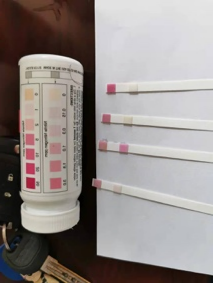
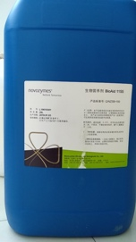
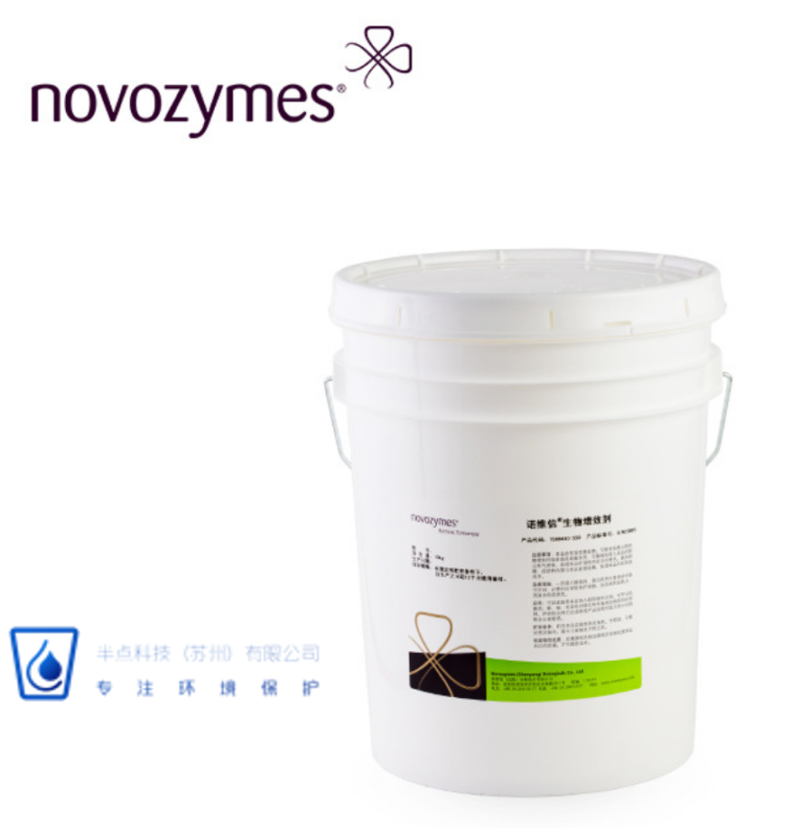
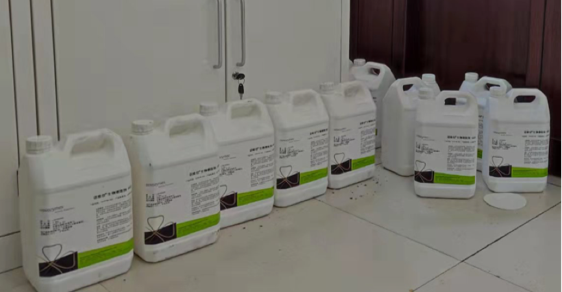

华东某化工企业污水系统出现故障，COD和氨氮全部超标，生化池污泥漂浮。通过现场调查分析，发现来水中非正常混入毒性物质造成系统中毒，污泥死亡。在半点科技工程师的建议下，采取了一系列运营调整、并先后投加COD去除菌BioRemove 2350/生物营养剂BioAid1155、和氨氮去除菌BioRemove 5805到好氧池的方式，成功恢复了生化系统。COD和氨氮重新全部达标排放。
具体的调整措施包括：
通过补充高效COD去除菌菌种和生物营养剂，加快活性污泥的生长，从而达到置换系统存量有毒污泥的目的。- 提高系统排泥。
- 好氧池投加活性炭增加物理吸附。
- 补充高效COD去除菌BioRemove2350。这个产品含有能降解复杂有机物臻选菌种，解除毒性能力强。
- 补充生物营养剂BioAid1155。这个产品含有促进细菌生长的营养剂和微量元素，可以有效的提高细菌的生长速度，从而达到新鲜高生物活性污泥的产生。
- 适当稳定排泥，并根据污泥浓度和运行参数，进行调整。
- 系统的污泥生长速度明显加快，COD去除效率也改善，COD排放达标。
- 活性污泥指标微生物数量明显增加。
- 活性污泥置换后在实验室测试系统的毒性，发现投加氨氮去除菌BioRemove5805后氨氮下降速度加快，判断系统解除毒性完成。
- 在好氧池逐步投加BioRemove5805，氨氮去除效率逐步改善。
- 系统的硝酸盐含量明显升高，表明硝化反应已经建立
- 氨氮可以达标排放。
镜检发现活性污泥中出现指示微生物：

硝酸盐含量升高：

  
生物营养剂：
COD去除菌BioRemove2350：
氨氮去除菌BioRemove5805：
半点科技(苏州)有限公司专业从事环境保护，依托丹麦诺维信全球先进的生物增效技术，和其他多种高度集成的污水处理设备，利用化学和微生物等手段帮助提高和改善系统的COD、BOD、氨氮、总氮去除效率，除臭，污泥减量等，成为客户解决水、气、泥治理的技术服务商和产品供应商。
半点科技（苏州）有限公司
联系人：余经理，24小时服务热线：15995813412
网 址：www.dropletech.net
邮箱：tyu@dropletech.net